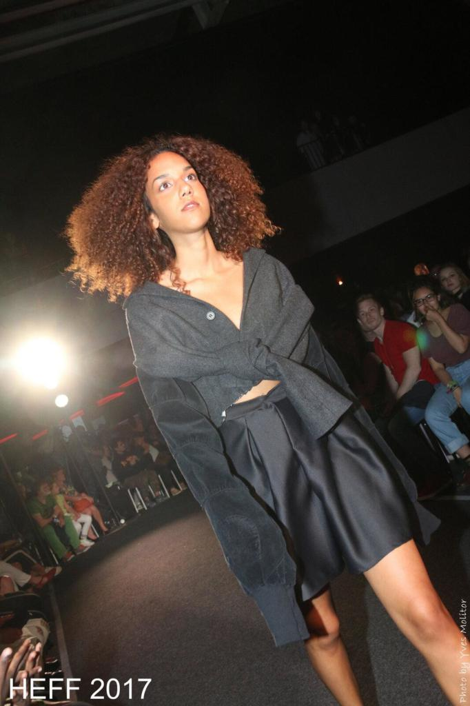
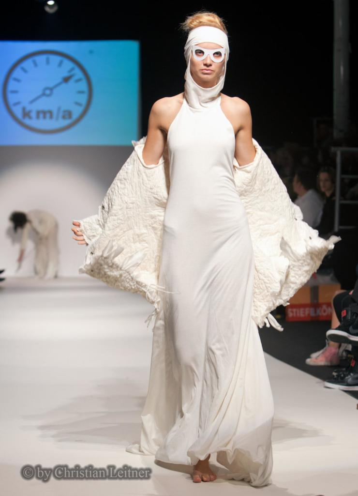

Overview
FashionVote combines fashion imagery with explicit pairwise preference behavior. I built the product and research workflow to study trend signals and user-level preferences rather than treating image classification alone as the product.

Choose black skirt
Choose white skirtThe question
Can direct user choices provide a useful behavioral signal for fashion analytics, and how far can we responsibly interpret those signals when the data are sparse or biased?
Approach
- Used DeepFashion-related imagery and curated image pairs for preference comparison.
- Built a Flask voting interface to collect pairwise choices.
- Analyzed behavioral signals alongside visual features.
- Trained classification models, including Random Forest experiments, for trend analysis.
- Recovered and sanitized the original demo with ResNet34 inference and local fashion-image assets.
Results and limits
Project experiments reached 90%+ trend-classification accuracy and analyzed preference behavior across 10K+ users. The more important finding was methodological: aggregate accuracy did not eliminate sampling bias, sparse labels, or uneven user coverage.
Recovered public demo
The current demo is a sanitized portfolio deployment of the recovered product experience. It preserves pairwise voting and model-backed interactions while removing the old database, insecure credentials, and production-only dependencies.